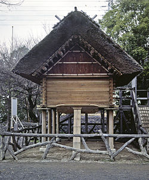
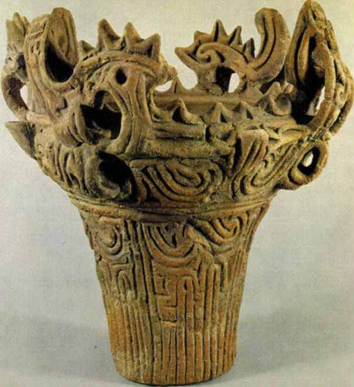
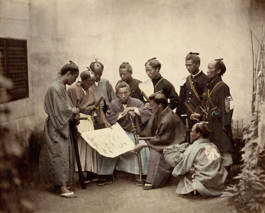
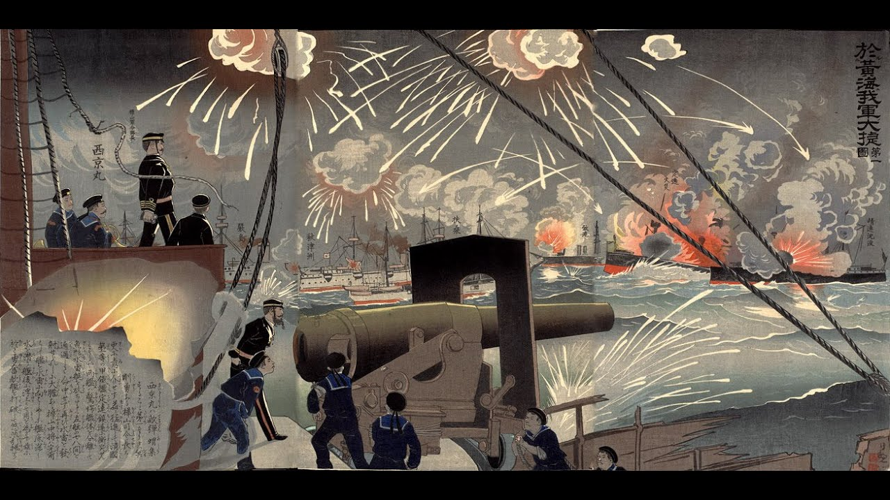

Около 10 тысяч лет до н. э. завершилась эпоха ледников, с таянием которых поднялся уровень мирового океана. Благодаря этому образовался Японский архипелаг. В результате потепления и изменения движения морских течений японские степи времён палеолита заросли густым лесом. Примерно в это же время на Японские острова переселилась новая группа людей из Юго-Восточной Азии. Представители этой группы хорошо разбирались в судостроении и морской навигации. Вероятно, их каноэподобные лодки-долблёнки были принесены к японским берегам тёплым океанским течением Куросио. Новоприбывшие юго-восточные азиаты смешались с потомками палеолитической популяции Японского архипелага.В неолите древние японцы перешли к оседлому образу жизни, формируя небольшие поселения в 20—30 человек на невысоких холмах. Типичным жильём были землянки и полуземлянки. Вокруг поселения находились мусорные кучи, которые одновременно служили местом захоронения умерших.
Эпоха Яёй
Около 10 тысяч лет до н. э. завершилась эпоха ледников, с таянием которых поднялся уровень мирового океана. Благодаря этому образовался Японский архипелаг. В результате потепления и изменения движения морских течений японские степи времён палеолита заросли густым лесом. Примерно в это же время на Японские острова переселилась новая группа людей из Юго-Восточной Азии. Представители этой группы хорошо разбирались в судостроении и морской навигации. Вероятно, их каноэподобные лодки-долблёнки были принесены к японским берегам тёплым океанским течением Куросио. Новоприбывшие юго-восточные азиаты смешались с потомками палеолитической популяции Японского архипелага.В неолите древние японцы перешли к оседлому образу жизни, формируя небольшие поселения в 20—30 человек на невысоких холмах. Типичным жильём были землянки и полуземлянки. Вокруг поселения находились мусорные кучи, которые одновременно служили местом захоронения умерших.
Эпоха Сэнгоку
Начался потерей сёгунами династии Асикага контроля над страной, что привело к децентрализации государственной власти и завершился установлением сёгуната Токугава. Иногда концом этой эпохи считают изгнание последнего сёгуна из династии Асикага из Киото по повелению Ода Нобунага — 1573 г.
Вместе с тем многие исследователи выделяют особый период японской истории — период Адзути-Момояма (яп. 安土桃山時代), совпадающий с периодом пребывания у власти Ода Нобунага и Тоётоми Хидэёси. Нет единой точки зрения и относительно датировок этой эпохи (вариант — 1573—1603).
Эпоха Мэйдзи
Девиз правления (нэнго) императора Муцухито; период в истории Японии с 23 октября 1868 года по 30 июля 1912 года. Этот период ознаменовался отказом Японии от самоизоляции и становлением её как мировой державы.
|